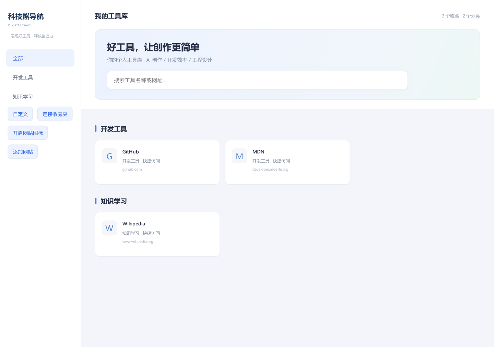

不再面对一长串收藏夹。让自己的好网站，按用途井然有序地出现在每个新标签页。
以下图片由浏览器运行公开示例页后打印渲染生成；仅含公开示例，不含用户收藏。未连接收藏夹时显示首字图标，授权后可读取本机站点图标。

授权后读取当前浏览器收藏。新增、改名和删除会在主页更新，无需公开你的链接。
按用途自动归类，也可切换到原收藏夹文件夹。分类只影响显示，不搬动原收藏。
名称、深浅主题、卡片密度和渐变背景自由选择。本地备份，随时迁移。
没有广告、没有推荐植入、没有分析埋点。不需要账号，不把收藏传给项目服务器。连接收藏夹和读取网站图标，分别由你授权。阅读隐私说明 ↗
从 GitHub Release 获取 ZIP，解压到固定目录。
打开 edge://extensions 或 chrome://extensions，开启开发人员模式，加载解压目录。
打开新标签页，保留主页更改，点击“连接收藏夹”并授权。网站图标可另行开启。
当前为开源开发版，尚未上架扩展商店；手动加载的扩展需要保持开发人员模式开启。网页示例不能访问浏览器收藏夹。